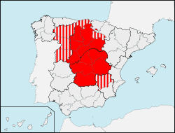

Integration Into Spain
The Marriage that Created a Country
Because Catalan Count Ramon Berenguer IV had married into the Aragonese Royal family during his reign in Catalunya, the Catalan region had established itself under the Aragon Crown. This is a vital concept when considering the full integration of Catalunya into modern Spain.
 The integration of Spanish counties into the Spain we know today began with the famous King Ferdinand I of Aragon and Queen Isabella of Castilla. When they married it united the regions of Aragon, the seat of the Crown of Aragon, and the regions of Castilla y Leon and Castilla La Mancha creating a massive landmass encompassing almost all of central and northern Spain. Thus, Catalunya was also integrated into the united Spanish country as it stood during that time, under one monarch.
With their sponsorship of Christopher Columbus in 1492 which started the boom in Spanish colonization had a severe impact on the economy of Catalunya, shifting commerce from the Mediterranean to the Atlantic. This shift did not just impact the economics of Catalunya, but also shifted its political importance to the region. Now, because of exploration and support of the “New World,” Catalunya was not the vital port to the Spanish economy any longer nor the political power-center it once was.
During this time, Catalunya maintained its own parliament as it had established upon uniting with Aragon as well as its own cultural identity despite the lacking political and economic focus from the Spanish monarchy.
Previous: Pre-Integration SpainNext: Seeds of DiscontentMap: Courtesy of Wikimedia Commons